Расчет усилительного каскада с ОЭ
Простая схема смещения транзистора (рис. 1) зависит от коэффициента бета, а он в свою очередь зависит от температуры. В результате на выходе схемы могут появиться искажения усиливаемого сигнала.
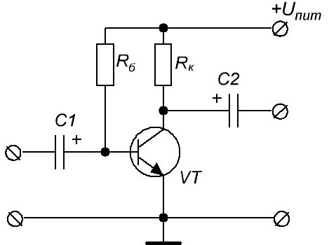
Рис. 1 - Простая схема смещения транзистора
Чтобы такого не произошло, в эту схему добавляют еще парочку резисторов и в результате получается схема с 4-мя резисторами (рис. 2).
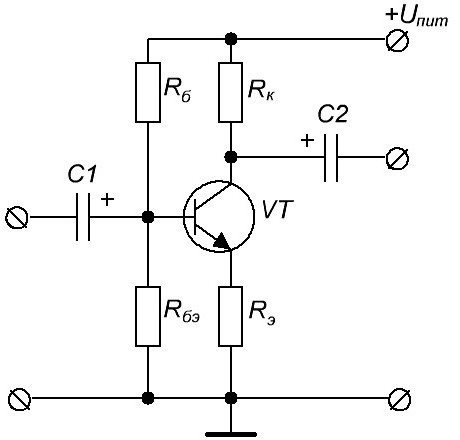
Рис. 2 - Усовершенствованная схема смещения транзистора
Резистор между базой и эмиттером назовем Rбэ, а резистор, соединенный с эмиттером, назовем Rэ. Предположим, что по цепи +Uпит→ Rк→ коллектор→ эмиттер→Rэ → земля проходит электрический ток, с силой в несколько миллиампер (если не учитывать ток базы, так как Iэ = Iк + Iб ) (рис. 3).
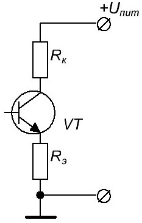
Рис. 3
Следовательно, на каждом резисторе у нас будет падать какое-то напряжение. Его величина будет зависеть от силы тока в цепи, а также от номинала самого резистора.
Упростим схему, заменив транзитор эквивалентным резистором Rкэ (рис. 4) . Rкэ — это сопротивление перехода коллектор-эмиттер. Сопротивление Rкэ в основном зависит от базового тока.
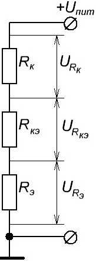
Рис. 4 - Делитель напряжения
В результате, у нас получается простой делитель напряжения (рис. 4), где
Uпит = URк + URкэ + URэ
Мы видим, что на эмиттере уже НЕ БУДЕТ напряжения в ноль вольт, как это было в прошлой схеме. Напряжение на эмиттере уже будет равняться падению напряжения на резисторе Rэ .
А чему равняется падение напряжения на Rэ ? Вспоминаем закон Ома и высчитываем:
URэ =IRэ
Как мы видим из формулы, напряжение на эмиттере будет равняться произведению силы тока в цепи на номинал сопротивления резистора Rэ .
Какую же функцию выполняют резисторы Rби Rбэ ?
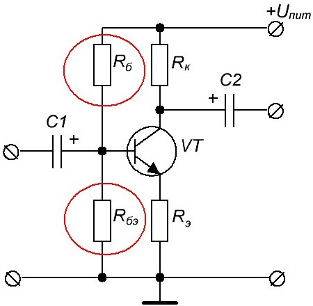
Рис. 5
Именно эти два резистора представляют из себя опять же простой делитель напряжения. Они задают определенное напряжение на базу, которое будет меняться, если только поменяется +Uпит, что бывает крайне редко. В остальных случаях напряжение на базе будет стоять мертво.
Вернемся к Rэ. Оказывается, он выполняет самую главную роль в этой схеме (рис. 3).
Предположим, у нас из-за нагрева транзистора начинает увеличиваться ток в этой цепи.
Теперь разберем поэтапно, что происходит после этого.
а) если увеличивается ток в этой цепи, то следовательно увеличивается и падение напряжения на резисторе Rэ .
б) падение напряжения на резисторе Rэ — это и есть напряжение на эмиттере Uэ. Следовательно, из-за увеличения силы тока в цепи Uэ стало чуток больше.
в) на базе у нас фиксированное напряжение Uб , образованное делителем из резисторов Rб и Rбэ
г) напряжение между базой эмиттером высчитывается по формуле Uбэ = Uб — Uэ . Следовательно, Uбэ станет меньше, так как Uэ увеличилось из-за увеличенной силы тока, которая увеличилась из-за нагрева транзистора.
д) Раз Uбэ уменьшилось, значит и сила тока Iб , проходящая через базу-эмиттер тоже уменьшилась.
е) Выводим Iк из формулы β =Iк/Iб :
Iк =βIб
Следовательно, при уменьшении базового тока, уменьшается и коллекторный ток. Режим работы схемы приходит в изначальное состояние. В результате схема у нас получилась с отрицательной обратной связью, в роли которой выступил резистор Rэ . Забегая вперед, скажу, что Отрицательная Обратная Связь (ООС) стабилизирует схему, а положительная наоборот приводит к полному хаосу, но тоже иногда используется в электронике.
Пример:
Рассчитать каскад на биполярном транзисторе КТ315Б с коэффициентом усиления равным KU = 10, Uпит = 12 В.
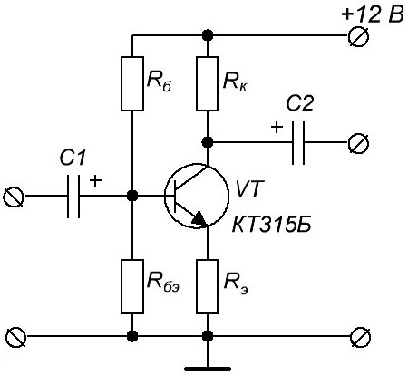
Рис. 6 - Схема для расчета
1) Находим из справочника максимально допустимую рассеиваемую мощность, которую транзистор может рассеять на себе в окружающую среду. Для моего транзистора это значение равняется 150 мВт. Мы не будем выжимать из нашего транзистора все соки, поэтому уменьшим нашу рассеиваемую мощность, умножив на коэффициент 0,8:
Pрас= 150·0,8 = 120 [мВт].
2) Определим напряжение на Uкэ . Оно должно равняться половине напряжения Uпит.
Uкэ = Uпит / 2 = 12/2=6 [В].
3) Определяем ток коллектора:
Iк = Pрас / Uкэ = 120·10-3 / 6 = 20 [мА].
4) Так как половина напряжения упала на коллекторе-эмиттере Uкэ , то еще половина должна упасть на резисторах. В нашем случае 6 В падают на резисторах Rк и Rэ . То есть получаем:
Rк + Rэ = (Uпит / 2) / Iк = 6 / 20х10-3 = 300 Ом.
Rк + Rэ = 300, а Rк =10Rэ , так как KU = Rк / Rэ , а мы взяли KU =10 ,
то составляем небольшое уравнение:
10Rэ + Rэ = 300
11Rэ = 300
Rэ = 300 / 11 = 27 [Ом[
Rк = 27·10=270 [Ом]
5) Определим ток базы Iбазы по формуле:
Iб=Iк/β
Коэффициент β мы замеряли в прошлом примере. Он у нас получился около 140.
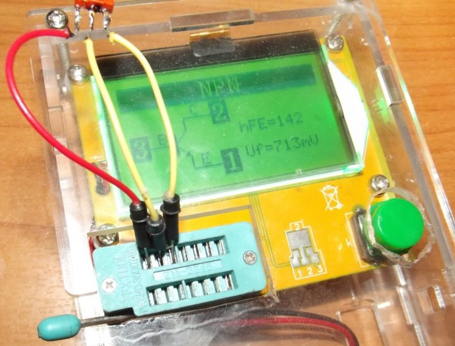
Рис. 7 - Измерение коэффициента β
Значит,
Iб = Iк /β = 20·10-3 /140 = 0,14 [мА]
6) Ток делителя напряжения Iдел , образованный резисторами Rб и Rбэ , в основном выбирают так, чтобы он был в 10 раз больше, чем базовый ток Iб :
Iдел = 10Iб = 10·0,14=1,4 [мА].
7) Находим напряжение на эмиттере по формуле:
Uэ= Iк Rэ= 20·10-3 · 27 = 0,54 [В].
8) Определяем напряжение на базе:
Uб = Uбэ + Uэ
Давайте возьмем среднее значение падения напряжения на базе-эмиттер Uбэ = 0,66 В. Как вы помните — это падение напряжения на P-N переходе.
Следовательно,
Uб =0,66 + 0,54 = 1,2 [В].
Именно такое напряжение будет теперь находиться у нас на базе.
9) Зная напряжение на базе (оно равняется 1,2 В), мы можем рассчитать номинал самих резисторов (рис. 8).
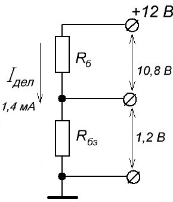
Рис. 8 -
Из формулы закона Ома высчитываем значение каждого резистора.
Для удобства пусть у нас падение напряжения на Rб называется U1 , а падение напряжения на Rбэ будет U2 .
Используя закон Ома, находим значение сопротивлений каждого резистора.
Rб = U1 / Iдел = 10,8 /(1,4·10-3) = 7,7 [кОм].
Берем из ближайшего ряда 8,2 кОм
Rбэ = U2 / Iдел = 1,2 / (1,4·10-3) = 860 [Ом].
Берем из ряда 820 Ом.
Номиналы резисторов указываем на схеме (рис. 9).
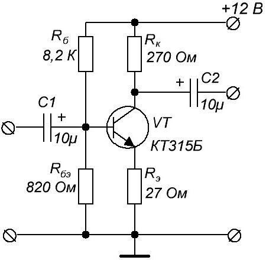
Рис. 9 - Схема с номиналами резисторов
Собираем схему на макетной плате и проверяем ее (рис. 10).
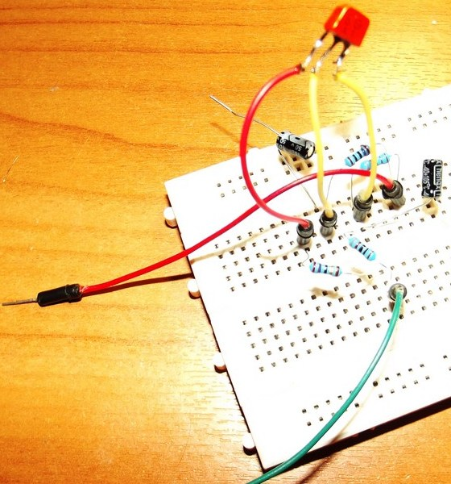
Рис. 10 - Схема собранная на макетной плате
Цепляем щупы осциллографа на вход и выход схемы. Подаём синусоидальный сигнал с помощью генератора частоты (рис. 11).
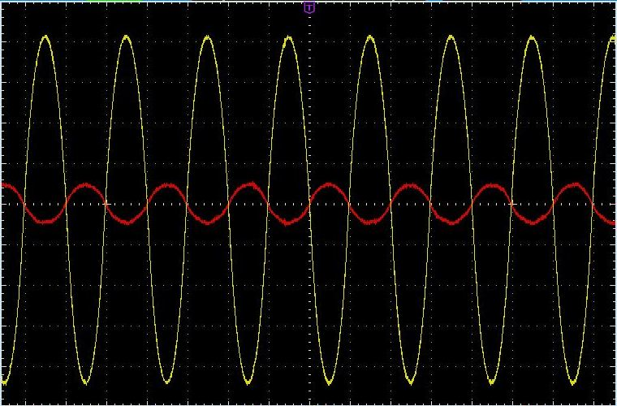
Рис. 11 - Осциллограммы синусоидальных сигналов на входе и выходе усилительного каскада
Красная осциллограмма — входной сигнал, желтая осциллограмма — выходной сигнал.
Сигнал усилился почти в 10 раз, как и предполагалось, так как наш коэффициент усиления был равен 10. Усиленный сигнал по схеме с ОЭ находится в противофазе, то есть сдвинут на 180 градусов.
Подадим еще треугольный сигнал (рис. 12).
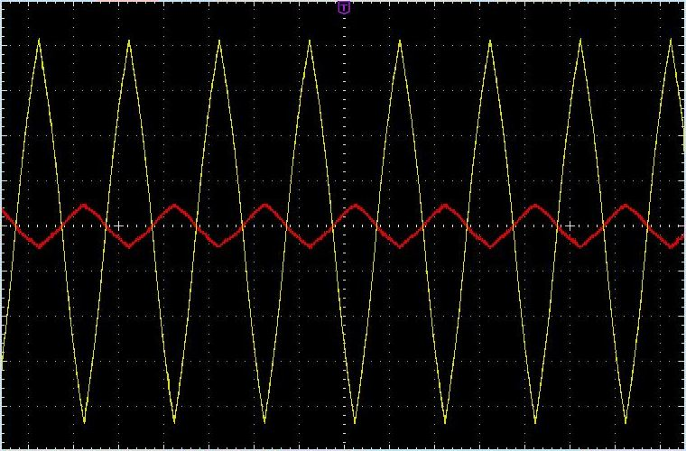
Рис. 12 - Осциллограммы треугольных сигналов на входе и выходе усилительного каскада с четыремя резисторами
Если присмотреться, то есть небольшие искажения. Если вспомнить осциллограмму схемы с двумя резисторами, то можно увидеть существенную разницу в усилении треугольного сигнала (рис. 13).
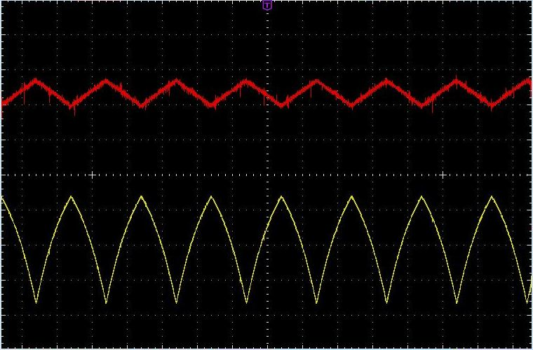
Рис. 13 - Осциллограммы треугольных сигналов на входе и выходе усилительного каскада с двумя резисторами
Выходное сопротивление схеме усилителя с ОЭ и с 4-мя резисторами в основном определяется номиналом резистора Rк . В данном случае это 270 Ом. Входное сопротивление Rвх примерно равняется:
Rвх = Rэβ.
В данном случае Rвх = 27·140=3780 Ом.
Схема с ОЭ во времена пика популярности биполярных транзисторов использовалась как самая ходовая. И этому есть свое объяснение:
Во-первых, эта схема усиливает как по току, так и по напряжению, а следовательно и по мощности, так как P=UI.
Во-вторых, ее входное сопротивление намного больше, чем выходное, что делает эту схему отличной малопотребляемой нагрузкой и отличным источником сигнала для следующих за ней нагрузок.
Ну а теперь немного минусов:
1) схема потребляет большой ток, пока находится в режиме ожидания. Это значит, питать ее долго от батареек не имеет смысла.
2) она уже морально устарела в наш век микроэлектроники. Для того, чтобы собрать усилитель, проще купить готовую микросхему и сделать на ее базе мощный и простой усилок.
Источники
ruselectronic.com - Биполярный транзистор. Расчет усилителя с ОЭ. Часть 3